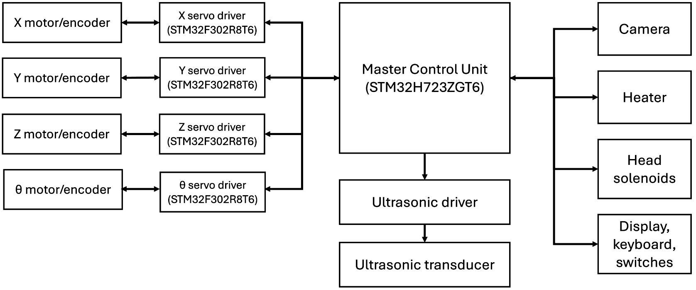
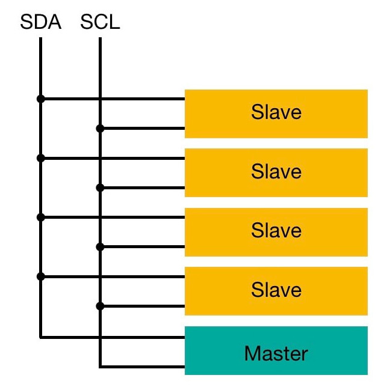

System architecture
Modular master/slave architecture
We decided to implement a modular master/slave architecture to control the various elements of the machine. This allows us to separate the motor drivers from the rest of the control logic, as we want to recycle the motor drivers' design for other projects (for example, to build a CNC machine).
Master Control Unit
The Master Control Unit (MCU) is based on a STM32H723ZGT6 microcontroller and it's responsible of:- Controlling the slave motor boards;
- Controlling the other active elements in the bonding procedure (wire feed/tear solenoids, temperature control, ultrasonic driver);
- Calculating motor trajectories;
- Managing the user interface (screen, joysticks and buttons).
Slave motor controllers
The four motor controllers are based on STM32F302R876 microcontrollers and they are responsible of:
- Driving the motors through a PID controller, which simultaneously regulates position, speed and current;
- Manage safety limit switches.
Top view of the system
In the image below we report the the simplified block scheme of the complete architecture. Custom communication protocol

The MCU and the slaves communicate using the I2C serial protocol and are connected in a multi-drop network.
We designed a minimal application-layer communication protocol to communicate information between the master and slave boards. The custom protocol allows the master to:
- Communicate path coordinates to the slave;
- Control the start and stop the motors;
- Read the status of the slaves;
- Set PID parameters.
Commands list
Generic command
A generic command has the following format:
0xYY 0xKK 0xZZ 0xUU 0xUU 0xUU 0xUU
where:
0xYYis the command ID;0xKKis the length of the message being sent (command ID included);0xZZis available for read/write commands only. It contains the virtual memory address of the data being sent/read;0xZZis available for read/write commands only. It contains the 4 byte read/write payload.
Command ID 0xYY
0x01: ACK0x02: NACK0x03: START0x04: STOP0x05: WRITE0x06: READ
Virtual memory address0xZZ
Numerical data is sent to virtual memory addresses so that the slave knows what to do with the data it has received from the master.
0x00: position0x01: speed0x02: acceleration0x03: measured position0x04: measured speed0x05: measured current0x06: slave control mode (0 for position control, 1 for speed control)0x07...0xFF: reserved for future use